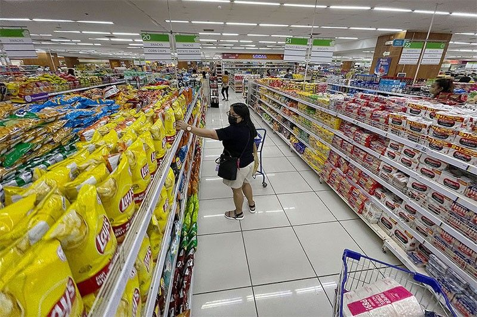

Peso closes ₱63.06 — 27th record low, and your import ticket just moved
15 Oct 2026
GMA News: the peso breached ₱63 per dollar on Thursday, closing at ₱63.06 after an intraday low of ₱63.15 — its 27th record low this year and the third straight down session. BusinessMirror and Context.ph put the same close on the board and spell out the operator risk: weaker peso lifts the peso cost of imported inputs, fuel, and materials just as Christmas demand usually rises. Federation of Philippine Industries chair Elizabeth Lee said factories that rely on imported raw materials, components, machinery, and fuel will see production costs climb and pressure prices over time. Operator read: food service sits on that same stack. Yesterday’s desk was about Jollibee and KFC fighting under ₱100; today the currency moves the cost of holding that fight. Practical moves for a Calamba or Metro Manila kitchen — (1) list every SKU priced off a dollar invoice and mark the ₱62→₱63 delta before Monday; (2) freeze new imported LTO experiments until you know the landed cost; (3) prefer local protein and produce lines where the DA still says staples are adequately supplied, and save the FX hit for items guests will actually pay for. Flag: macro FX coverage, not a menu announcement.
Open GMA · Open Context.ph

USDA: F&B retail only +1.6% this year as guests chase value and smaller packs
6 Oct 2026
PhilSTAR, citing USDA-FAS Manila: Philippine food and beverage retail sales are expected to rise just 1.6% to $123 billion this year from $121 billion, as higher prices soften household consumption and reinforce “price-sensitive, value-seeking” behavior — cost-effective alternatives, essentials first, value over volume. Longer term, USDA still sees about 7% CAGR through 2030 on new retailers, modern chains pushing into cities and rural areas, and e-commerce. The Philippine Amalgamated Supermarkets Association says operators are answering weak spend with smaller, more affordable packs while raising prices on larger packaging to protect margins, and regularly retuning inventory, pack size, and mix to local demographics even as national chains keep expanding. Food and non-alcoholic beverages remain 36% of household spending. Operator read: this is the demand-side twin of the peso story. Guests are not leaving the category; they are downsizing. If your board only offers full meals and large drinks, you are fighting the pack-size war with the wrong SKUs. Build one deliberate small format — solo rice meal, half dessert, 8-oz drink — that still makes money at the new FX, and stop pretending volume will save a thin margin line.
Open PhilSTAR